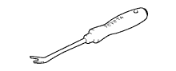

ФОРСУНКА СТЕКЛООМЫВАТЕЛЯ (заднего) > УСТАНОВКА > Подготовка

| Динамометрический ключ | - |
| Проволочная щетка | - |
| Защитная клейкая лента | - |
| Универсальная консистентная смазка | - |
 | 09010-3C120 | Набор торцевых головок "TORX" | - |
 | (09013-1C120) | Торцевой ключ с головкой "TORX" T30 T-типа | - |
|  | 09061-1C110 | Инструмент для снятия фиксаторов 10 мм | - |
| 09082-00050 | Электрический диагностический прибор TOYOTA | - | |
 | (09083-00150) | Комплект проводов для диагностического прибора | - |